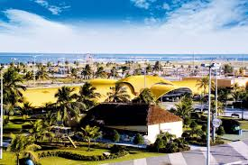

Praia de Atalaia

Na orla de atalaia existem opções de lazer como bares e casas de dança e música, álem de barracas de água de coco e quadras de basquete futebol, tênis e uma pista de skate .Considerada uma das mais bonitas do Brasil oferece aos cidadãos e turistas o que há de melhor em lazer e entretenimento.
Roteiro turistíco em 1 Dia
- Café da manhã em uma das barracas da orla.
- Caminhada até o Arco da Atalaia para fotos.
- Visita ao Oceanário de Aracaju (Projeto Tamar).
- Almoço com frutos do mar.
- Tarde livre para banho de mar e esportes.
- Fim de tarde com água de coco observando o pôr do sol.